전기기사 (2016-08-21 기출문제)
1과목: 전기자기학
1. 반지름이 a[m]이고, 단위 길이에 대한 권수가 n인 무한장 솔레노이드의 단위 길이당 자기인덕턴스는 몇H/m 인가?
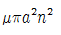
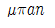
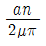
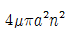
(정답률: 78%)

2. 선전하밀도 p[C/m]를 갖는 코일이 반원형의 형태를 취할 때, 반원의 중심에서 전계의 세기를 구하면 몇 V/m인가? (단, 반지름은 r[m]이다.)
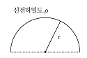
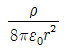
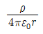
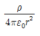
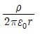
(정답률: 55%)
3. 비투자율 ㎲는 역자성체에서 다음 어느 값을 갖는가?
- ㎲ = 0
- ㎲ < 1
- ㎲ >1
- ㎲ = 1
(정답률: 85%)
4. 도전율 σ, 투자율 μ인 도체에 교류 전류가 흐를 때 표피 효과의 영향에 대한 설명으로 옳은 것은?
- σ가 클수록 작아진다.
- μ가 클수록 작아진다.
- μs가 클수록 작아진다.
- 주파수가 높을수록 커진다.
(정답률: 83%)
5. 자계와 전류계의 대응으로 틀린 것은?
- 자속 ↔ 전류
- 기자력 ↔ 기전력
- 투자율 ↔ 유전율
- 자계의 세기 ↔ 전계의 세기
(정답률: 81%)
6. 다음의 관계식 중 성립할 수 없는 것은? (단, μ는 투자율, μ0는 진공의 투자율, x는 자화율, J는 자화의 세기이다.)
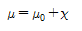
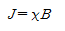
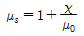
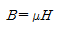
(정답률: 78%)
7. 베이클라이트 중의 전속밀도가 D[C/m2] 일때의 분극의 세기는몇 C/m2인가? (단, 베이클라이트의 비유전율은
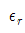
이다.)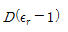
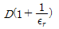
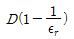
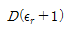
(정답률: 75%)
8. 철심부의 평균 길이가 l2, 공극의 길이가 l1, 단면적이 S인 자기회로이다. 자속밀도를 B[Wb/m2]로 하기 위한 기자력[AT]은?
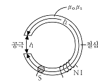
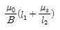
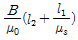
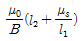
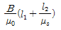
(정답률: 61%)
9. 자성체의 자화의 세기 J=8kA/m 자화율 xm=0.02일 때 자속밀도는 약 몇 T인가?(오류 신고가 접수된 문제입니다. 반드시 정답과 해설을 확인하시기 바랍니다.)
- 7000
- 7500
- 8000
- 8500
(정답률: 62%)
10. 진공중의 자계 10AT/m인 점에 5×10-3Wb의 자극을 놓으면 그 자극에 작용하는 힘[N]은?
- 5×10-2
- 5×10-3
- 2.5×10-2
- 2.5×10-3
(정답률: 72%)
11. 전계와 자계와의 관계에서 고유임피던스는?
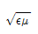
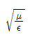
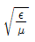
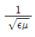
(정답률: 72%)
12. 자성체 3×4×20[cm3]가 자속밀도 B=130mT로 자화되었을 때 자기모멘트가 48[Am2]이었다면 자화의 세기(M)는 몇 [A/m]인가?
- 104
- 105
- 2×104
- 2×105
(정답률: 48%)
13. 그림과 같은 평행판 콘덴서에 극판의 면적이 S[m2], 진전하 밀도를 σ[C/m2], 유전율이 각각
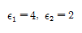
인 유전체를 채우고 a, b 양단에 V[V]의 전압을 인가할 때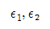
인 유전체 내부의 전계의 세기 E1, E2와의 관계식은?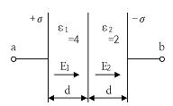
- E1 = 2E2
- E1 = 4E2
- 2E1 = E2
- E1 = E2
(정답률: 71%)
14. 쌍극자 모멘트가 M[C ㆍ m]인 전기쌍극자에 의한 임의의 점 P에서의 전계의 크기는 전기 쌍극자의 중심에서 축방향과 점 P를 잇는 선분 사이의 각이 얼마일 때 최대가 되는가?
- 0
- π/2
- π/3
- π/4
(정답률: 70%)
15. 원점에 +1[C], 점(2,0)에 -2[C]의 점전하가 있을 때 전계의 세기가 0인 점은?(오류 신고가 접수된 문제입니다. 반드시 정답과 해설을 확인하시기 바랍니다.)
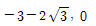
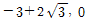
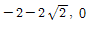
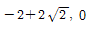
(정답률: 49%)
16. 반지름 2mm, 간격 1m의 평행왕복 도선이 있다. 도체간에 전압 6kV를 가했을 때 단위 길이당 작용하는 힘은 몇 N/m인가? (문제 오류로 실제 시험에서는 모두 정답처리 되었습니다. 여기서는 1번을 누르면 정답 처리 됩니다.)
- 8.06 × 10-5
- 8.06 × 10-6
- 6.87 × 10-5
- 6.87 × 10-6
(정답률: 73%)
17. 유전율이  인 유전체 경계면에 수직으로 전계가 작용할 때 단위 면적당에 작용하는 수직력은?
인 유전체 경계면에 수직으로 전계가 작용할 때 단위 면적당에 작용하는 수직력은?
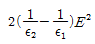
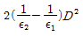
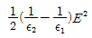
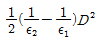
(정답률: 76%)
18. 진공 중에서 +q[C]과 -q[C]의 점전하가 미소거리 a/m 만큼 떨어져 있을 때 이 쌍극자가 P점에 만드는 전계[V/m]와 전위[V]의 크기는?
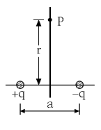
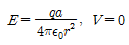
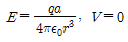
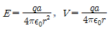
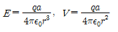
(정답률: 59%)
19. 반지름 a[m]인 원형코일에 전류 I[A]가 흘렀을 때 코일 중심에서의 자계의 세기 [At/m]는?
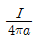
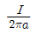
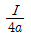
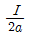
(정답률: 62%)
20. 손실 유전체에서 전자파에 대한 전파정수 r로서 옳은 것은?
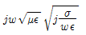
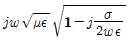
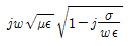
(정답률: 57%)
2과목: 전력공학
21. 송전거리, 전력, 손실률 및 역률이 일정하다면 전선의 굵기는?
- 전류에 비례한다.
- 전류에 반비례한다.
- 전압의 제곱에 비례한다.
- 전압의 제곱에 반비례한다.
(정답률: 64%)
22. 보호계전기의 보호방식 중 표시선 계전방식이 아닌 것은?
- 방향 비교 방식
- 위상 비교 방식
- 전압 반향 방식
- 전류 순환 방식
(정답률: 47%)
23. 중성점 직접 접지 방식에 대한 설명으로 틀린 것은?
- 계통의 과도 안정도가 나쁘다.
- 변압기의 단절연이 가능하다.
- 1선 지락시 건전상의 전압은 거의 상승하지 않는다.
- 1선 지락전류가 적어 차단기의 차단능력이 감소된다.
(정답률: 62%)
24. 단상 변압기 3대를 △결선으로 운전하던 중 1대의 고장으로 V결선 한 경우 V결선과 △결선의 출력비는 약 몇 %인가?
- 52.2
- 57.7
- 66.7
- 86.6
(정답률: 73%)
25. 전력선에 영상 전류가 흐를 때 통신선로에 발생되는 유도 장해는?
- 고조파 유도장해
- 전력 유도장해
- 전자 유도장해
- 정전 유도장해
(정답률: 68%)
26. 변압기의 결선 중에서 1차에 제3고조파가 있을 때 2차에 제 3고조파 전압이 외부로 나타나는 결선은?
- Y - Y
- Y - △
- △ - Y
- △ - △
(정답률: 61%)
27. 3상 3선식의 전선 소요량에 대한 3상 4선식의 전선 소요량의 비는 얼마인가? (단, 배전거리, 배전전력 및 전력손실은 같고, 4선식의 중성선의 굵기는 외선의 굵기와 같으며, 외선과 중성선간의 전압은 3선식의 선간전압과 같다.)
- 4/9
- 2/3
- 3/4
- 1/3
(정답률: 54%)
28. 수전단의 전력원 방정식이 으로 표현되는 전력계통에서 가능한 최대로 공급할 수 있는 부하전력 Pr과 이때 전압을 일정하게 유지하는데 필요한 무효전력 Qr은 각각 얼마인가?
- Pr = 500, Qr = -400
- Pr = 400, Qr = 500
- Pr = 300, Qr = 100
- Pr = 200, Qr = -300
(정답률: 80%)
29. 그림과 같이 부하가 균일한 밀도로 도중에서 분기되어 선로전류가 송전단에 이를수록 직선적으로 증가할 경우 선로의 전압강하는 이 송전단 전류와 같은 전류의 부하가 선로의 말단에만 집중되어 있을 경우의 전압강하보다 어떻게 되는가? (단, 부하 역률은 모두 같다고 한다.)
- 1/3
- 1/2
- 1
- 2
(정답률: 68%)
30. 컴퓨터에 의한 전력 조류 계산에서 슬랙(slack)모선의 지정값은?(단, 슬랙 모선을 기준모선으로 한다.)
- 유효전력과 무효전력
- 모선 전압의 크기와 유효전력
- 모선 전압의 크기와 무효전력
- 모선 전압의 크기와 모선 전압의 위상각
(정답률: 66%)
31. 동일 모선에 2개 이상의 급전선(Feeder)을 가진 비접지 배전계통에서 지락사고에 대한 보호계전기는?
- OCR
- OVR
- SGR
- DFR
(정답률: 73%)
32. 차단기의 차단능력이 가장 가벼운 것은?
- 중성점 직접접지 계통의 지락 전류 차단
- 중성점 저항접지 계통의 지락 전류 차단
- 송전선로의 단락사고시의 단락사고 차단
- 중성점을 소호리액터로 접지한 장거리 송전선로의 지락전류 차단
(정답률: 70%)
33. 한류리액터의 사용 목적은?
- 누설전류의 제한
- 단락전류의 제한
- 접지전류의 제한
- 이상전압 발생의 방지
(정답률: 79%)
34. 통신선과 평행인 주파수 60㎐의 3상 1회선 송전선이 있다. 1선 지락 때문에 영상전류가 100A 흐르고 있다면 통신선에 유도되는 전자유도전압은 약 몇 V인가? (단, 영상전류는 전 전선에 걸쳐서 같으며, 송전선과 통신선과의 상호인덕턴스는 0.06mH/㎞, 그 평행 길이는 40㎞이다.)
- 156.6
- 162.8
- 230.2
- 271.4
(정답률: 52%)
35. 중거리 송전선로의 특성은 무슨 회로로 다루어야 하는가?
- RL 집중 정수 회로
- RLC 집중 정수 회로
- 분포 정수 회로
- 특성 임피던스 회로
(정답률: 66%)
36. 전력용 콘덴서의 사용전압을 2배로 증가시키고자 한다. 이 때 정전용량을 변화시켜 동일 용량으로 유지하려면 승압전의 정전용량보다 어떻게 변화하면 되는가?
- 4배로 증가
- 2배로 증가
- 1/2로 감소
- 1/4로 감소
(정답률: 49%)
37. 발전기의 단락비가 작은 경우의 현상으로 옳은 것은?
- 단락전류가 커진다.
- 안정도가 높아진다.
- 전압 변동률이 커진다.
- 선로를 충전할 수 있는 용량이 증가한다.
(정답률: 63%)
38. 송전선로에서 1선 지락시에 건전상의 전압 상승이 가장 적은 접지 방식은?
- 비접지 방식
- 직접 접지 방식
- 저항 접지 방식
- 소호 리액터 접지 방식
(정답률: 52%)
39. 배전 선로의 손실을 경감하기 위한 대책으로 적절하지 않은 것은?
- 누전 차단기 설치
- 배전 전압의 승압
- 전력용 콘덴서 설치
- 전류 밀도의 감소와 평형
(정답률: 55%)
40. 댐의 부속설비가 아닌 것은?
- 수로
- 수조
- 취수구
- 흡출관
(정답률: 72%)
3과목: 전기기기
41. 정격출력이 7.5kW의 3상 유도전동기가 전부하 운전에서 2차 저항손이 300W이다. 슬립은 약 몇%인가?
- 3.85
- 4.61
- 7.51
- 9.42
(정답률: 56%)
42. 직류 분권 발전기를 병렬 운전을 하기 위해서는 발전기 용량 P와 정격전압 V는?
- P와 V 모두 달라도 된다.
- P는 같고, V는 달라도 된다.
- P와 V가 모두 같아야 한다.
- P는 달라도 V는 같아야 한다.
(정답률: 67%)
43. 권선형 유도 전동기 기동 시 2차측에 저항을 넣는 이유는?
- 회전수 감소
- 기동전류 증대
- 기동 토크 감소
- 기동전류 감소와 기동 토크 증대
(정답률: 72%)
44. 변압기에서 철손을 구할 수 있는 시험은?
- 유도 시험
- 단락 시험
- 부하 시험
- 무부하 시험
(정답률: 70%)
45. 권선형 유도 전동기의 2차 권선의 전압 같은 위상의 전압 Ec를 공급하고 있다. Ec를 점점 크게 하면 유도 전동기의 회전방향과 속도는 어떻게 변하는가?
- 속도는 회전자계와 같은 방향으로 동기속도까지만 상승한다.
- 속도는 회전자계와 반대 방향으로 동기속도까지만 상승한다.
- 속도는 회전자계와 같은 방향으로 동기속도 이상으로 회전할 수 있다.
- 속도는 회전자계와 반대 방향으로 동기속도 이상으로 회전할 수 있다.
(정답률: 48%)
46. 주파수 60㎐ 슬립 0.2인 경우 회전자 속도가 720rpm일 때 유도 전동기의 극수는?
- 4
- 6
- 8
- 12
(정답률: 67%)
47. 단락비가 큰 동기기에 대한 설명으로 옳은 것은?
- 안정도가 높다.
- 기계가 소형이다.
- 전압 변동률이 크다.
- 전기자 반작용이 크다.
(정답률: 71%)
48. 유도전동기의 1차 전압 변화에 의한 속도 제어시 SCR을 사용하여 변화시키는 것은?
- 토크
- 전류
- 주파수
- 위상각
(정답률: 64%)
49. 비철극형 3상 동기발전기의 동기 리액턴스 Xs=10Ω, 유도기전력 E=6000V 단자전압 V=5000V 부하각 δ=30°일 때 출력은 몇 kW인가? (단, 전기자 권선저항은 무시한다. )
- 1500
- 3500
- 4500
- 5500
(정답률: 47%)
50. 3상 유도전동기 원선도에서 역률[%]을 표시하는 것은?
(정답률: 65%)
51. 상수 m, 매극 매상당 슬롯수 q인 동기 발전기에서 n차 고조파분에 대한 분포계수는?
(정답률: 63%)
52. 유도 전동기 1극의 자속 및 2차 도체에 흐르는 전류와 토크와의 관계는?
- 토크는 1극의 자속과 2차 유효전류의 곱에 비례한다.
- 토크는 1극의 자속과 2차 유효전류의 제곱에 비례한다.
- 토크는 1극의 자속과 2차 유효전류의 곱에 반비례한다.
- 토크는 1극의 자속과 2차 유효전류의 제곱에 반비례한다.
(정답률: 50%)
53. 동기 전동기의 기동법 중 자기동법에서 계자권선을 저항을 통해서 단락시키는 이유는?
- 기동이 쉽다.
- 기동 권선으로 이용한다.
- 고전압의 유도를 방지한다.
- 전기자 반작용을 방지한다.
(정답률: 50%)
54. 슬롯수 36의 고정자 철심이 있다. 여기에 3상 4극의 2층권으로 권선할 때 매극 매상의 슬롯수와 코일 수는?
- 3과 18
- 9와 36
- 3과 36
- 8과 18
(정답률: 52%)
55. 3단자 사이리스터가 아닌 것은?
- SCR
- GTO
- SCS
- TRIAC
(정답률: 67%)
56. 단상 변압기를 병렬 운전할 경우 부하 전류의 분담은?
- 용량에 비례하고 누설 임피던스에 비례
- 용량에 비례하고 누설 임피던스에 반비례
- 용량에 반비례하고 누설 리액턴스에 비례
- 용량에 반비례하고 누설리액턴스의 제곱에 비례
(정답률: 63%)
57. 6극 직류 발전기의 정류자 편수가 132, 유기기전력이 210V, 직렬 도체수가 132개이고 중권이다. 정류자 편간 전압은 약 몇 V인가?
- 4
- 9.5
- 12
- 16
(정답률: 58%)
58. 직류 발전기의 전기자 반작용의 영향이 아닌 것은?
- 주자속이 증가한다.
- 전기적 중성축이 이동한다.
- 정류작용에 악영향을 준다.
- 정류자편 사이의 전압이 불균일하게 된다.
(정답률: 69%)
59. 3000V의 단상 배전선 전압을 3300V로 승압하는 단권 변압기의 자기 용량은 약 몇 kVA인가? (단, 여기서 부하 용량은 100kVA이다.)
- 2.1
- 5.3
- 7.4
- 9.1
(정답률: 61%)
60. 변압기 운전에 있어 효율이 최대가 되는 부하는 전부하의 75%였다고 하면, 전부하에서의 철손과 동손의 비는?
- 4 : 3
- 9 : 16
- 10 : 15
- 18 : 30
(정답률: 73%)
4과목: 회로이론 및 제어공학
61. 단위 피드백 제어계의 개루프 전달함수가 일 때 단위 계단 입력에 대한 정상 편차는?
- 1/3
- 2/3
- 1
- 4/3
(정답률: 55%)
62. 에서 점근선의 교차점을 구하면?
(정답률: 69%)
63. 그림의 블록선도에서 K에 대한 폐루프 전달함수 의 감도 는?
- -1
- -0.5
- 0.5
- 1
(정답률: 45%)
64. 다음의 전달함수 중에서 극점이 영점이 -2인 것은?
(정답률: 67%)
65. 비례요소를 나타내는 전달함수는?
(정답률: 63%)
66. 다음의 논리회로를 간단히 하면?
(정답률: 65%)
67. 근궤적에 대한 설명 중 옳은 것은?
- 점근선은 허수축에서만 교차한다.
- 근궤적이 허수축을 끊는 K의 값은 일정하다.
- 근궤적은 절대 안정도 및 상대안정도와 관계가 없다.
- 근궤적의 개수는 극점의 수와 영점의 수 중에서 큰 것과 일치한다.
(정답률: 71%)
68. 에서 시스템이 안정하기 위한 K의 범위는?
- 0 < K < 8
- -8 < K< 0
- 1 < K < 8
- -1 < K < 8
(정답률: 72%)
69. 전달함수 인 제어계의 임펄스응답 c(t)는?
(정답률: 62%)
70. 는?
(정답률: 55%)
71. 전하 보존의 법칙과 가장 관계가 있는 것은?
- 키르히호프의 전류법칙
- 키르히호프의 전압법칙
- 옴의 법칙
- 렌츠의 법칙
(정답률: 69%)
72. 그림과 같은 직류 전압의 라플라스 변환을 구하면?
(정답률: 70%)
73. 의 전류가 도선을 30초간 흘렀을 때 통과한 전체 전기량[Ah]은?
- 4.25
- 6.75
- 7.75
- 8.25
(정답률: 54%)
74. 인덕턴스 L=20[mH]인 코일에 실효값 E=50[V], 주파수 f=60[㎐]인 정현파 전압을 인가했을 때 코일에 축적되는 평균 자기에너지는 약 몇 J인가?
- 6.3
- 4.4
- 0.63
- 0.44
(정답률: 49%)
75. 그림의 사다리꼴 회로에서 부하전압 VL의 크기는 몇 V인가?
- 3.0
- 3.25
- 4.0
- 4.15
(정답률: 57%)
76. 전압비 106을 데시벨[dB]로 나타내면?
- 20
- 60
- 100
- 120
(정답률: 68%)
77. 상전압이 120V인 평형 3상 Y결선의 전원에 Y결선 부하를 도선으로 연결하였다. 도선의 임피던스는 이고 부하의 임피던스는 이다. 이때 부하에 걸리는 전압은 약 몇 V인가?
- 67.18∠-25.4°
- 101.62∠0°
- 113.14∠-1.1°
- 118.42∠-30°
(정답률: 48%)
78. 전송선로의 특성 임피던스가 100Ω이고, 부하저항이 400Ω일 때 전압 정재파비 S는 얼마인가?
- 0.25
- 0.6
- 1.67
- 4.0
(정답률: 43%)
79. 구동점 임피던스 함수에 있어서 극점은?
- 개방 회로 상태를 의미한다.
- 단락 회로 상태를 의미한다.
- 아무 상태도 아니다.
- 전류가 많이 흐르는 상태를 의미한다.
(정답률: 63%)
80. 그림과 같은 파형의 파고율은?
- 0.707
- 1.414
- 1.732
- 2.000
(정답률: 61%)
5과목: 전기설비기술기준 및 판단기준
81. 태양전지 발전소에 시설하는 태양전지 모듈, 전선 및 개폐기의 시설에 대한 설명으로 틀린 것은?
- 전선은 공칭단면적 2.5mm2이상의 연동선을 사용할 것
- 태양전지 모듈에 접속하는 부하측 전로에는 개폐기를 시설할 것
- 태양전지 모듈을 병렬로 접속하는 전로에 과전류 차단기를 시설할 것
- 옥측에 시설하는 경우 금속관 공사, 합성수지관 공사, 애자 사용 공사로 배선할 것.
(정답률: 51%)
82. 가요전선관 공사에 대한 설명 중 틀린 것은?(관련 규정 개정전 문제로 여기서는 기존 정답인 2번을 누르면 정답 처리됩니다. 자세한 내용은 해설을 참고하세요.)
- 가요전선관 안에서는 전선의 접속점이 없어야 한다.
- 1종 금속제 가요 전선관의 두께는 1.2mm 이상이어야 한다.
- 가요전선관 내에 수용되는 전선은 연선이어야 하며 단면적 10mm2 이하는 무방하다.
- 가요전선관 내에 수용되는 전선은 옥외용 비닐 절연전선을 제외하고는 절연전선이어야 한다.
(정답률: 64%)
83. 직류 귀선은 궤도 근접 부분이 금속제 지중 관로와 접근하거나 교차하는 경우에 전기부식 방지를 위한 상호 이격거리는 몇 m 이상이어야 하는가?(오류 신고가 접수된 문제입니다. 반드시 정답과 해설을 확인하시기 바랍니다.)
- 1.0
- 1.5
- 2.5
- 3.0
(정답률: 26%)
84. 가공전선로의 지지물에 시설하는 지선의 시방세목을 설명한 것 중 옳은 것은?
- 안전율은 1.2 이상일 것
- 허용 인장하중의 최저는 5.26kN 으로 할 것
- 소선은 지름 1.6mm 이상인 금속선을 사용할 것
- 지선에 연선을 사용할 경우 소선 3가닥 이상의 연선일 것
(정답률: 68%)
85. 시가지내에 시설하는 154kV 가공 전선로에 지락 또는 단락이 생겼을 때 몇 초 안에 자동적으로 이를 전로로부터 차단하는 장치를 시설하여야 하는가?
- 1
- 3
- 5
- 10
(정답률: 62%)
86. 발전소, 변전소, 개폐소의 시설부지 조성을 위해 산지를 전용할 경우에 전용하고자 하는 산지의 평균 경사도는 몇 도 이하이어야 하는가?
- 10
- 15
- 20
- 25
(정답률: 33%)
87. 가공전선로에 사용하는 지지물의 강도 계산에 적용하는 갑종 풍압하중을 계산할 때 구성재의 수직 투영면적 1m2에 대한 풍압 값[Pa]의 기준으로 틀린 것은?
- 목주 : 588
- 원형 철주 : 588
- 원형 철근 콘크리트주 : 1038
- 강관으로 구성된 철탑(단주는 제외) : 1255
(정답률: 68%)
88. 특고압 가공전선이 도로, 횡단보도교, 철도 또는 궤도와 제 1차 접근상태로 시설되는 경우 특고압 가공전선로는 제 몇 종 보안공사에 의하여야 하는가?
- 제 1종 특고압 보안공사
- 제 2종 특고압 보안공사
- 제 3종 특고압 보안공사
- 제 4종 특고압 보안공사
(정답률: 46%)
89. 통신선과 저압 가공전선 또는 특고압 가공전선로의 다중 접지를 한 중성선 사이의 이격거리는 몇 cm 이상인가?
- 15
- 30
- 60
- 90
(정답률: 51%)
90. 철탑의 강도계산에 사용하는 이상시 상정하중이 가하여지는 경우의 그 이상시 상정 하중에 대한 철탑의 기초에 대한 안전율은 얼마 이상이어야 하는가?
- 1.2
- 1.33
- 1.5
- 2.5
(정답률: 65%)
91. 사용전압 22.9kV인 가공 전선과 지지물과의 이격거리는 일반적으로 몇 cm 이상이어야 하는가?
- 5
- 10
- 15
- 20
(정답률: 49%)
92. 전기방식시설의 전기방식 회로의 전선 중 지중에 시설하는 것으로 틀린 것은?(오류 신고가 접수된 문제입니다. 반드시 정답과 해설을 확인하시기 바랍니다.)
- 전선은 공칭단면적 4.0mm2의 연동선 또는 이와 동등 이상의 세기 및 굵기의 것일 것
- 양극에 부속하는 전선은 공칭 단면적 2.5mm2 이상의 연동선 또는 이와 동등 이상의 세기 및 굵기의 것을 사용할 수 있을 것
- 전선을 직접 매설식에 의하여 시설하는 경우 차량 기타의 중량물의 압력을 받을 우려가 없는 것에 매설 깊이를 1.2m 이상으로 할 것
- 입상 부분의 전선 중 깊이 60cm 미만인 부분은 사람이 접촉할 우려가 없고 또한 손상을 받을 우려가 없도록 적당한 방호장치를 할 것
(정답률: 56%)
93. 수소 냉각식 발전기 또는 이에 부속하는 수소 냉각 장치에 관한 시설 기준으로 틀린 것은?
- 발전기안의 수소의 온도를 계측하는 장치를 시설할 것
- 조상기안의 수소의 압력 계측 장치 및 압력 변동에 대한 경보 장치를 시설할 것
- 발전기안의 수소의 순도가 70% 이하로 저하할 경우에 경보하는 장치를 시설할 것
- 발전기는 기밀 구조의 것이고 또한 수소가 대기압에서 폭발하는 경우에 생기는 압력에 견디는 강도를 가지는 것일 것
(정답률: 72%)
94. 전동기의 절연내력 시험은 권선과 대지간에 계속하여 시험전압을 가할 경우, 최소 몇 분간은 견디어야 하는가?
- 5
- 10
- 20
- 30
(정답률: 72%)
95. 고압 가공전선이 안테나와 접근상태로 시설되는 경우에 가공전선과 안테나 사이의 수평이격거리는 최소 몇 cm 이상이어야 하는가? (단, 가공전선으로는 케이블을 사용하지 않는다고 한다.)
- 60
- 80
- 100
- 120
(정답률: 48%)
96. 옥내에 시설하는 관등회로의 사용전압이 1000V를 초과하는 방전등 공사에 사용되는 네온 변압기 외함의 접지공사로 옳은 것은? (관련 규정 개정전 문제로 여기서는 기존 정답인 3번을 누르면 정답 처리됩니다. 자세한 내용은 해설을 참고하세요.)
- 제 1종 접지공사
- 제 2종 접지공사
- 제 3종 접지공사
- 특별 제 3종 접지공사
(정답률: 60%)
97. 주택의 옥내를 통과하여 그 주택 이외의 장소에 전기를 공급하기 위한 옥내 배선을 공사하는 방법이다. 사람이 접촉할 우려가 없는 은폐된 장소에서 시행하는 공사의 종류가 아닌 것은? (단, 주택의 옥내 전로의 대지전압은 300V이다.)
- 금속관 공사
- 케이블 공사
- 금속덕트 공사
- 합성 수지관 공사
(정답률: 43%)
98. 전기 울타리의 시설에 관한 규정 중 틀린 것은?
- 전선과 수목 사이의 이격거리는 50cm 이상이어야 한다.
- 전기 울타리는 사람이 쉽게 출입하지 아니하는 곳에 시설하여야 한다.
- 전선은 인장강도 1.38kN 이상의 것 또는 지름 2mm 이상의 경동선이어야 한다.
- 전기 울타리용 전원 장치에 전기를 공급하는 전로의 사용전압은 250V 이하이어야 한다.
(정답률: 50%)
99. 주택 등 저압 수용 장소에서 고정 전기설비에 TN-C-S 접지 방식으로 접지공사 시 중성선 겸용 보호도체(PEN)를 알루미늄으로 사용할 경우 단면적은 몇 mm2이상이어야 하는가?
- 2.5
- 6
- 10
- 16
(정답률: 52%)
100. 유도장해의 방지를 위한 규정으로 사용전압 60kV 이하인 가공 전선로의 유도전류는 전화선로의 길이 12km마다 몇 μA를 넘지 않도록 하여야 하는가?
- 1
- 2
- 3
- 4
(정답률: 66%)
L = μ₀n²πa²
여기서 μ₀는 자유공간의 유도율이고, n은 권수, a는 반지름을 나타낸다.
따라서 단위 길이당 자기인덕턴스는 다음과 같다.
L' = L/1m = μ₀n²πa²/1m = μ₀n²πa²H/m
따라서 정답은 "" 이다.